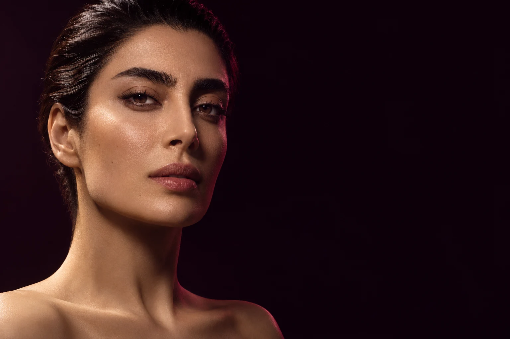
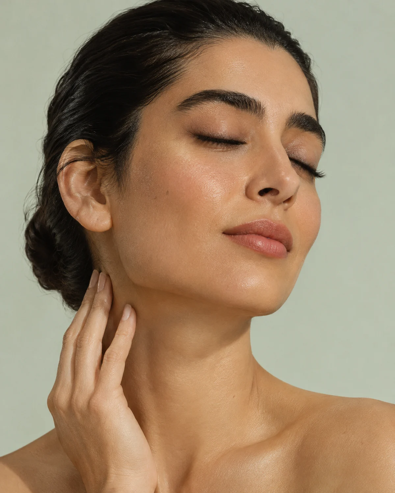
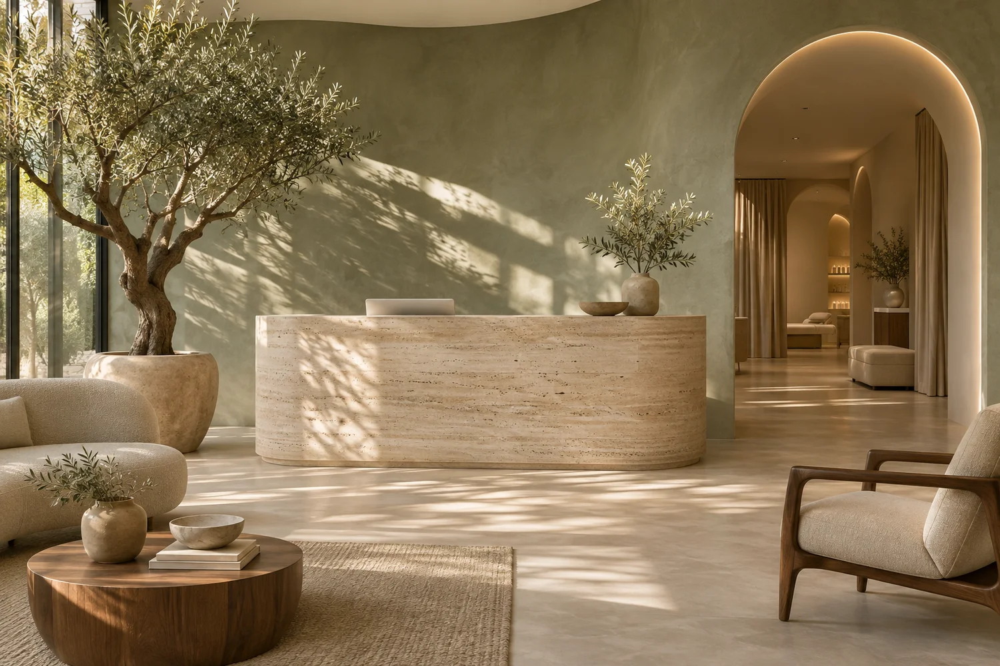

برای خطوط پیشانی یا دور چشم سؤال داری؟ در جلسهٔ مشاوره، محل خطوط و حالت چهرهات بررسی میشود و دربارهٔ انتخابهایت حرف میزنیم.

پوست، مو و زیباییAESTHETICS, WITH A PERSONAL TOUCH.
از زاویهٔ خودت
زیبایی تو،از نزدیک.
بوتاکس، فیلر لب، لیزر و مراقبت پوست.
از چیزی که در ذهن داری بگو؛ از همانجا شروع میکنیم.
چهرهلبپوستبدن
۰۱ / قبل از هر تغییریA CLOSER LOOK
این چهره،
مالِ توست.
پس انتخاب هم باید با خودت باشد. در جلسهٔ اول از چیزی که دوست داری تغییر کند میگویی؛ پزشک گزینهها و محدودیتها را توضیح میدهد. بعد، با فرصت کافی تصمیم میگیری.
خدمات اُرا
۰۲ / خدماتTHE TREATMENT EDIT
کدام تغییر
در ذهن توست؟
یک خدمت را انتخاب کن.
اگر هنوز مطمئن نیستی، از مشاوره شروع کن.
فرم دلخواهت را بگو یا عکسی که در ذهن داری همراه بیاور. پزشک تناسب آن با چهرهات، گزینههای موجود و محدودیتها را توضیح میدهد.
ناحیهٔ موردنظرت را انتخاب کن. برای مشخصشدن برنامهٔ جلسات، ابتدا پوست و شرایطت در مشاوره بررسی میشود.
خشکی، لک یا دغدغهای دیگر؟ قبل از انتخاب محصول یا روش، دربارهٔ وضعیت پوست و مراقبتهایی که تا امروز داشتهای صحبت میکنیم.
۰۳ / از نزدیکFORM, IN FOCUS
جزئیات،
از هر زاویه.
مجسمه را بچرخان.
روی ناحیهای که میخواهی بیشتر بشناسی بزن.
برای چرخاندن، بکشید
AURA / FORM STUDY 003
01 / EXPRESSIONبوتاکس،
بوتاکس،
برای کدام خطوط؟
پیشانی یا دور چشم؟ ناحیهای که مدنظرت است را در مشاوره مشخص کن تا پزشک حالت چهره و انتخابهای مناسب را بررسی کند.
انتخاب روش، پس از معاینه و مشاورهٔ پزشک انجام میشود.

نور طبیعی. فضای آرام. وقت کافی.THE AURA SPACE
۰۴ / کلینیک اُراROOM TO FEEL AT EASE
بنشین.
وقت داریم.
جلسهٔ اول فقط برای انتخاب یک خدمت نیست. وقت داریم سؤالهایت را بشنویم، گزینهها را بررسی کنیم و دربارهٔ چیزی که واقعاً میخواهی حرف بزنیم.
۰۵ / سؤالات شما
قبل از
مراجعه.
در جلسهٔ اول چه اتفاقی میافتد؟ +
دربارهٔ خواستهات صحبت میکنی، پزشک ارزیابی اولیه را انجام میدهد و گزینهها را توضیح میدهد. این جلسه فرصتی برای سؤالپرسیدن و تصمیمگرفتن است.
اگر ندانم کدام خدمت را انتخاب کنم؟ +
در فرم رزرو، مشاورهٔ عمومی را انتخاب کن. لازم نیست پیش از معاینه دربارهٔ روش خاصی تصمیم گرفته باشی.
آیا بعد از مشاوره باید همان روز اقدام کنم؟ +
خیر. میتوانی توضیحات پزشک را بشنوی، فکر کنی و بعد دربارهٔ ادامهٔ مسیر تصمیم بگیری.
این فرم، نوبت واقعی ثبت میکند؟ +
این سایت یک نمونهکار طراحی است. میتوانی مراحل رزرو را امتحان کنی، اما نوبت واقعی یا پیامکی ثبت نمیشود.
از همینجا شروع کن
برای مشاوره
وقت بگیر.
خدمت و زمان دلخواهت را انتخاب کن.LET’S TALK ABOUT YOU.